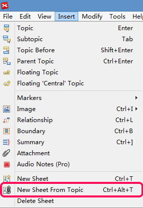

New Sheet From Topic
New Sheet from Topic is an elegant design that enables you to create a new mind map from a part of the current map.
- Open a file, Map A, and select one topic
- Click "Insert - New Sheet from Topic" from the menu, or use shortcut "Ctrl+Alt+T".
- Then we will get a new map, Map B. It contains the selected topic and its subtopics.

Note:
- Central topic in Map B is just the topic you select in Map A.
- This central topic is linked with that selected topic.